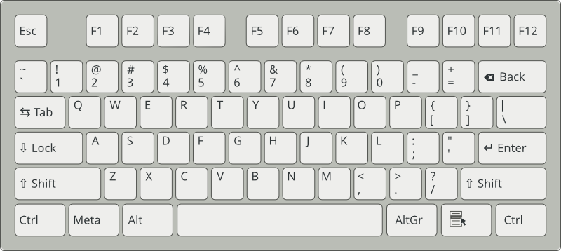

This HOWTO describes a range of potential common problems and their solutions.
If your situation is not precisely listed here, there may be one on openSUSE Help and Troubleshooting site. For more detailed installation instructions and deployment strategies, see the openSUSE documentation.
ELMA appliance comes out of the box without any Linux graphical user interface. Therefore it is useful to have some basic knowledge of working with OpenSSH utilities and Linux shell because some operation and administration tasks only can be done with shell commands.
In networked environments, it is often necessary to access hosts from a remote location. The SSH implementation coming with openSUSE is OpenSSH and provides the necessary protection by encrypting the authentication strings (usually a login name and a password) and all the other data exchanged between the hosts.
openSUSE installs the OpenSSH package by default providing the commands:
ssh, scp, and sftp
In the default configuration, remote access of a openSUSE system is only possible with the OpenSSH utilities, and only if the sshd is running and the firewall permits access.
By using the ssh program, it is possible to log in to remote systems and to work interactively. To log in to the host elma as user tux use one of the following commands:
ssh tux@elma
ssh -l tux elma
If the username is the same on both machines, you may omit it:
ssh elma
The remote host prompts for the remote user’s password. After a successful authentication, you can work on the remote command line or use interactive applications, such as YaST in text mode.
The default shell in openSUSE is Bash (GNU Bourne-Again Shell).
net-snmp tools
snmptrap -v 1 -c public 127.0.0.1 .1.3.6.1 localhost 6 17 '' .1.3.6.1 s "Just a test ;-)"
rsyslog traffic generator - rsyslog test and benchmark suite
tcpflood -X -m2 -R2 -S1 -t127.0.0.1 -Ttcp -p514
00001 open connections
starting run 1
Sending 2 messages.
00000002 messages sent
runtime: 0.001
sleeping 1 seconds before next run
starting run 2
Sending 2 messages.
00000002 messages sent
runtime: 0.000
Runs: 2
Runtime:
total: 0.001
avg: 0.000
min: 0.000
max: 0.001
All times are wallclock time.
00001 close connections
End of tcpflood Run
Using logger to Make System Log Entries
logger is a tool for making entries in the system log. It provides a shell command interface to the syslog(3) system log module. For example, the following line outputs its message in /var/log/messages:
logger -t Test 'This messages comes from $USER'
Depending on the current user and hostname, /var/log/messages contains a line similar to this:
Sep 28 13:09:31 venus Test: This messages comes from tux
Feeding rsyslog witch Common Event Expression - CEE enhanced syslog
logger 'This is a message with a CEE cookie for enhanced syslog @cee: {"customer": "ELMA", "country_code": "DE"}'
Kiwi SyslogGen - a Free Syslog message generator for Windows
Results of Test and performance tuning.
Distribution script elma-reconfigure
/usr/share/elma/bin/elma-reconfigure.sh --help
Options:
--help Display this help message and exit
--all Reconfigure all below services
--apache Reconfigure Apache2 web service
--collectd Reconfigure collectd service
--config-status Check ELMA config file differences
--diag System diagnostics - File system checks and cleanup
--dns Reconfigure DNS service
--elasticsearch Reconfigure elasticsearch service
--firewall Reconfigure services to be configured during first boot
--firstboot Reconfigure SuSEfirewall service
--ftp Reconfigure FTP service
--install Install required system packages
--internet Check internet access
--kibana Reconfigure Kibana3 service
--logstash Reconfigure logstash service
--nagios Reconfigure Nagios service
--network Reconfigure Network service
--ntp Reconfigure NTP service
--patch Apply needed patches
--patch-config Patch ELMA config file
--postfix Reconfigure postfix service
--proxy Reconfigure proxy configuration
--reboot System reboot
--repositories Reconfigure system distribution repositories
--reset Reset ELMA configuration parameter to factory defaults
--rsyslog Reconfigure rsyslog service
--snmp Reconfigure snmpd service
--snmptrap Reconfigure snmptrapd service
--update Update system packages to newest available versions
--webyast Reconfigure webyast service
Wrong timpstamp in ELMA Search-Gui - Is your system time synchronized and up to date?
One of the quickest commands to verify that ntpd is still up and running as desired is:
ntpq -p
To compare time offsets between local system time and time taken from your ntp server:
ntpdate -d server
To synchronize your system time manually:
systemctl stop ntp.service
ntpdate server
systemctl start ntp.service
Old time-based indices logs have to be removed in a nightly cron job.
Optimizing indices is also a good thing to do at off-peak times, because it improves your search speed. This is recommended especially when you have time-based indices, because (with the exception of the “current” one) they never change, so you only have to do this once on an “old” index.
/etc/cron.d/elma-elasticsearch.sh
/etc/cron.d/elma-config-backup.sh
/etc/cron.d/elma-delete-backup.sh
Starting with openSUSE 12.x systemd is a replacement for the popular SysV init daemon.
The program systemd is the process with process ID 1. It is responsible for initializing the system in the required way. systemd is started directly by the Kernel and resists signal 9, which normally kills processes. All other programs are either started directly by systemd or by one of its child processes.
systemctl [ enable | disable | start | stop | restart | reload | status ] <my_service(s)>.service
systemctl status apache2.service apache2.service - apache Loaded: loaded (/lib/systemd/system/apache2.service; enabled) Active: active (running) since Thu, 2013-07-04 19:04:47 CEST; 11min ago Process: 1430 ExecStart=/usr/sbin/start_apache2 -D SYSTEMD -k start (code=exited, status=0/SUCCESS) Main PID: 1861 (httpd2-prefork) CGroup: name=systemd:/system/apache2.service 1861 /usr/sbin/httpd2-prefork -f /etc/apache2/httpd.conf -DSSL -D SYSTEMD -k start 1910 PassengerWatchdog 1913 PassengerHelperAgent 1915 Passenger spawn server 1918 PassengerLoggingAgent 1927 /usr/sbin/httpd2-prefork -f /etc/apache2/httpd.conf -DSSL -D SYSTEMD -k start 1928 /usr/sbin/httpd2-prefork -f /etc/apache2/httpd.conf -DSSL -D SYSTEMD -k start 1929 /usr/sbin/httpd2-prefork -f /etc/apache2/httpd.conf -DSSL -D SYSTEMD -k start 1930 /usr/sbin/httpd2-prefork -f /etc/apache2/httpd.conf -DSSL -D SYSTEMD -k start 1931 /usr/sbin/httpd2-prefork -f /etc/apache2/httpd.conf -DSSL -D SYSTEMD -k start Jul 04 19:04:47 elma-es.fritz.box systemd[1]: Started apache.systemctl status nagios.service nagios.service - LSB: Network monitor Nagios Loaded: loaded (/etc/init.d/nagios) Active: active (running) since Thu, 2013-07-04 19:04:47 CEST; 12min ago Process: 1717 ExecStart=/etc/init.d/nagios start (code=exited, status=0/SUCCESS) CGroup: name=systemd:/system/nagios.service 1899 /usr/sbin/nagios -d /etc/nagios/nagios.cfg Jul 04 19:10:37 elma-es.fritz.box nagios[1899]: SERVICE ALERT: elma-es.fritz.box;NTP Peer;CRITICAL;HARD;4;NTP CRITICAL: Server not synchronized, Offset unknown Jul 04 19:10:37 elma-es.fritz.box nagios[1899]: SERVICE FLAPPING ALERT: elma-es.fritz.box;NTP Peer;STARTED; Service appears to have started flapping (23....hreshold) Jul 04 19:11:17 elma-es.fritz.box nagios[1899]: SERVICE ALERT: elma-es.fritz.box;Syslog Queue;UNKNOWN;HARD;4;**ePN /usr/lib/nagios/plugins/check_files.pl...ne 755,". Jul 04 19:11:17 elma-es.fritz.box nagios[1899]: SERVICE NOTIFICATION: nagiosadmin;elma-es.fritz.box;Syslog Queue;UNKNOWN;notify-service-by-email;**ePN /u...ine 755,. Jul 04 19:11:17 elma-es.fritz.box nagios[1899]: SERVICE NOTIFICATION: admin;elma-es.fritz.box;Syslog Queue;UNKNOWN;notify-service-by-email;**ePN /usr/lib...ine 755,. Jul 04 19:13:37 elma-es.fritz.box sudo[2918]: pam_unix(sudo:auth): conversation failed Jul 04 19:13:37 elma-es.fritz.box sudo[2918]: pam_unix(sudo:auth): auth could not identify password for [root] Jul 04 19:13:47 elma-es.fritz.box nagios[1899]: SERVICE ALERT: elma-es.fritz.box;Network Interfaces;OK;HARD;4;eth0:UP (0.0Mbps/0.0Mbps/0.0/0.0/24.0/0.0):(1 UP): OK Jul 04 19:13:47 elma-es.fritz.box nagios[1899]: SERVICE FLAPPING ALERT: elma-es.fritz.box;Network Interfaces;STARTED; Service appears to have started fla...hreshold) Jul 04 19:15:37 elma-es.fritz.box nagios[1899]: SERVICE ALERT: elma-es.fritz.box;NTP Peer;WARNING;HARD;4;NTP WARNING: Server has the LI_ALARM bit set, Of...0967 secssystemctl status elasticsearch.service elasticsearch.service - elasticsearch Loaded: loaded (/usr/lib/systemd/system/elasticsearch.service; enabled) Active: active (running) since Thu, 2013-07-04 19:04:45 CEST; 14min ago Docs: http://www.elasticsearch.org Process: 1429 ExecStart=/opt/elasticsearch-0.90.0/bin/elasticsearch -p /var/run/elasticsearch.pid -Des.max-open-files=true -Des.bootstrap.mlockall=true -Des.cluster.name=$ES_CLUSTER_NAME -Des.node.name=$ES_NODE_NAME -Des.config=$CONF_FILE -Des.path.home=$ES_HOME -Des.path.logs=$LOG_DIR -Des.path.data=$DATA_DIR -Des.path.work=$WORK_DIR -Des.path.conf=$CONF_DIR -Des.path.plugins=$ES_PLUGIN_DIR (code=exited, status=0/SUCCESS) Main PID: 1476 (java) CGroup: name=systemd:/system/elasticsearch.service 1476 java -Xms2g -Xmx2g -Xss256k -Djava.awt.headless=true -XX:+UseParNewGC -XX:+UseConcMarkSweepGC -XX:CMSInitiatingOccupancyFraction=75 -XX... Jul 04 19:04:45 elma-es.fritz.box systemd[1]: Starting elasticsearch... Jul 04 19:04:45 elma-es.fritz.box systemd[1]: Started elasticsearch. Jul 04 19:04:52 elma-es.fritz.box elasticsearch[1429]: [2013-07-04 19:04:52,006][INFO ][bootstrap ] max_open_files [63974]systemctl status rsyslog.service rsyslog.service - System Logging Service Loaded: loaded (/usr/lib/systemd/system/rsyslog.service; enabled) Active: active (running) since Thu, 2013-07-04 19:04:42 CEST; 15min ago Process: 482 ExecStartPre=/usr/sbin/rsyslog-service-prepare (code=exited, status=0/SUCCESS) Main PID: 497 (rsyslogd) CGroup: name=systemd:/system/rsyslog.service 497 /usr/sbin/rsyslogd -n Jul 04 19:04:42 elma-es.fritz.box systemd[1]: Started System Logging Service.
systemctl stop SuSEfirewall2.service systemctl start SuSEfirewall2.service systemctl restart SuSEfirewall2.service
ps -ef
ps -ef | grep syslog root 515 1 0 18:31 ? 00:00:00 /usr/sbin/rsyslogd -n
ps -ef | grep elasticsearch elastic+ 1664 1 2 18:32 ? 00:00:43 java -Xms2g -Xmx2g -Xss256k -Djava.awt.headless=true -XX:+UseParNewGC -XX:+UseConcMarkSweepGC -XX:CMSInitiatingOccupancyFraction=75 -XX:+UseCMSInitiatingOccupancyOnly -XX:+HeapDumpOnOutOfMemoryError -Delasticsearch -Des.pidfile=/var/run/elasticsearch.pid -Des.path.home=/opt/elasticsearch-0.90.0 -cp :/opt/elasticsearch-0.90.0/lib/elasticsearch-0.90.0.jar:/opt/elasticsearch-0.90.0/lib/*:/opt/elasticsearch-0.90.0/lib/sigar/* -Des.max-open-files=true -Des.bootstrap.mlockall=true -Des.cluster.name=elma -Des.node.name=elma-es.fritz.box -Des.config=/etc/elasticsearch/elasticsearch.yml -Des.path.home=/opt/elasticsearch-0.90.0 -Des.path.logs=/var/log/elasticsearch -Des.path.data=/data -Des.path.work=/data/tmp -Des.path.conf=/etc/elasticsearch -Des.path.plugins=/opt/elasticsearch-0.90.0/plugins org.elasticsearch.bootstrap.ElasticSearch
ps -ef | grep apache root 1884 1 0 18:32 ? 00:00:00 /usr/sbin/httpd2-prefork -f /etc/apache2/httpd.conf -DSSL -D SYSTEMD -k start wwwrun 1910 1884 0 18:32 ? 00:00:00 /usr/sbin/httpd2-prefork -f /etc/apache2/httpd.conf -DSSL -D SYSTEMD -k start wwwrun 1911 1884 0 18:32 ? 00:00:00 /usr/sbin/httpd2-prefork -f /etc/apache2/httpd.conf -DSSL -D SYSTEMD -k start wwwrun 1912 1884 0 18:32 ? 00:00:00 /usr/sbin/httpd2-prefork -f /etc/apache2/httpd.conf -DSSL -D SYSTEMD -k start wwwrun 1913 1884 0 18:32 ? 00:00:00 /usr/sbin/httpd2-prefork -f /etc/apache2/httpd.conf -DSSL -D SYSTEMD -k start wwwrun 1914 1884 0 18:32 ? 00:00:00 /usr/sbin/httpd2-prefork -f /etc/apache2/httpd.conf -DSSL -D SYSTEMD -k start
ps -ef | grep nagios nagios 1679 1 0 18:32 ? 00:00:00 /usr/sbin/nrpe -c /etc/nrpe.cfg -d nagios 1915 1 0 18:32 ? 00:00:02 /usr/sbin/nagios -d /etc/nagios/nagios.cfg
There are several places to look when you encounter problems with your system. Following a list of the most frequently checked log files follows with the description of their typical purpose.
/var/log/boot.msg - Messages from the kernel reported during the boot process /var/log/messages - Ongoing messages from the kernel and system log daemon (when running) /var/log/warn - All messages from the kernel and system log daemon with the warning level or higher /var/log/wtmp - Binary file containing user login records for the current machine session (View it with last) /var/log/YaST2/ - Directory containing YaST's actions and their results /var/log/zypper.log - Log file of zypper
/var/log/apache2/access_log /var/log/apache2/error_log /var/log/apache2/ssl_request_log
/var/log/elasticsearch/elma.log /var/log/elasticsearch/elma_index_indexing_slowlog.log /var/log/elasticsearch/elma_index_search_slowlog.log
/var/log/elma/
/var/log/nagios/
cat /proc/partitions major minor #blocks name 253 0 25165824 vda 253 1 204804 vda1 253 2 24959996 vda2 253 16 16567296 vdb 252 0 4194304 dm-0 252 1 8392704 dm-1 252 2 4194304 dm-2 252 3 8175616 dm-3 252 4 16564224 dm-4
parted /dev/vda 'print' Model: Virtio Block Device (virtblk) Disk /dev/vda: 25.8GB Sector size (logical/physical): 512B/512B Partition Table: msdos Number Start End Size Type File system Flags 1 1049kB 211MB 210MB primary ext3 boot, type=83 2 211MB 25.8GB 25.6GB primary lvm, type=8e
fdisk -l
pvcreate /dev/sdb1 Physical volume "/dev/sdb1" successfully createdvgscan Reading all physical volumes. This may take a while... Found volume group "systemVG" using metadata type lvm2lvscan ACTIVE '/dev/systemVG/LVvar_log' [4.00 GiB] inherit ACTIVE '/dev/systemVG/LVdata' [64.00 GiB] inherit ACTIVE '/dev/systemVG/LVRoot' [7.91 GiB] inheritpvscan PV /dev/sda2 VG systemVG lvm2 [75.91 GiB / 0 free] PV /dev/sdb1 lvm2 [150.00 GiB] Total: 2 [225.91 GiB] / in use: 1 [75.91 GiB] / in no VG: 1 [150.00 GiB]vgextend systemVG /dev/sdb1 Volume group "systemVG" successfully extendedvgs VG #PV #LV #SN Attr VSize VFree systemVG 2 3 0 wz--n- 225.90g 150.00glvextend -L213G /dev/systemVG/LVdata Extending logical volume LVdata to 213.00 GiB Logical volume LVdata successfully resizedresize2fs /dev/systemVG/LVdata resize2fs 1.42.4 (12-June-2012) Filesystem at /dev/systemVG/LVdata is mounted on /data; on-line resizing required old_desc_blocks = 4, new_desc_blocks = 14 Performing an on-line resize of /dev/systemVG/LVdata to 55836672 (4k) blocks. The filesystem on /dev/systemVG/LVdata is now 55836672 blocks long.
df -h Filesystem Size Used Avail Use% Mounted on devtmpfs 2.0G 32K 2.0G 1% /dev tmpfs 2.0G 0 2.0G 0% /dev/shm tmpfs 2.0G 201M 1.8G 11% /run /dev/mapper/systemVG-LVRoot 7.5G 2.1G 5.0G 29% / tmpfs 2.0G 0 2.0G 0% /sys/fs/cgroup tmpfs 2.0G 201M 1.8G 11% /var/lock tmpfs 2.0G 201M 1.8G 11% /var/run /dev/mapper/dataVG-LVdata 16G 179M 15G 2% /data /dev/vda1 199M 53M 136M 28% /boot /dev/mapper/systemVG-LVvar_spool_ 3.9G 143M 3.6G 4% /var/spool /dev/mapper/systemVG-LVopt_ 3.9G 330M 3.4G 9% /opt /dev/mapper/systemVG-LVvar_log_ 7.8G 200M 7.2G 3% /var/log
df -ih Filesystem Inodes IUsed IFree IUse% Mounted on devtmpfs 495K 416 494K 1% /dev tmpfs 496K 1 496K 1% /dev/shm tmpfs 496K 431 495K 1% /run /dev/mapper/systemVG-LVRoot 1.6M 71K 1.5M 5% / tmpfs 496K 13 496K 1% /sys/fs/cgroup tmpfs 496K 431 495K 1% /var/lock tmpfs 496K 431 495K 1% /var/run /dev/mapper/dataVG-LVdata 1013K 616 1012K 1% /data /dev/vda1 13K 564 12K 5% /boot /dev/mapper/systemVG-LVvar_log_ 1.1M 1.2K 1.0M 1% /var/log /dev/mapper/systemVG-LVvar_spool_ 512K 72 512K 1% /var/spool /dev/mapper/systemVG-LVopt_ 512K 9.7K 503K 2% /opt
fsck (file system consistency check) utility is used to check and repair filesystems (ext2, ext3, ext4, ...). Depending on the last time of filesystem checks, the operating system runs fsck during boot time to check whether filesystems are in consistent states.
You could also run fsck command manually when there is a problem with filesystems. Make sure to execute the fsck on an unmounted filesystems to avoid any data corruption issues.
Note: You need to be root and console access to use any of the below mentioned commands.
init 1
umount /var/lib/elasticsearch
fsck -y /data fsck from util-linux 2.21.2 e2fsck 1.42.6 (21-Sep-2012) /dev/mapper/dataVG-LVdata: clean, 438/1036320 files, 110534/4141056 blocks
fsck -a -AR
mount /var/lib/elasticsearch
touch /forcefsck
reboot
HowTo Boot into openSUSE when it won’t Boot from the Grub Code on the Hard Drive
Regardless of what language and keyboard layout your final installation will be using, most BIOS configurations use the US keyboard layout as depicted in the following figure:
